Class 3 · 20 lessons
हिन्दी · Hindi
शब्द, वाक्य और कहानियों के साथ सीखें।
Choose a lesson
Explore at your own pace
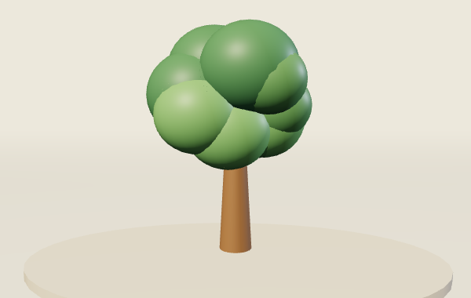
शब्दों की दोस्ती
समान अर्थ वाले शब्द
Open lesson HIN-01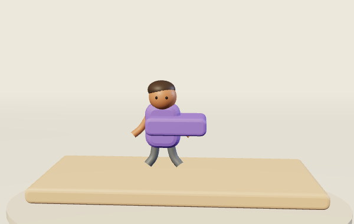
सुनो और शब्द चुनो
ड़ और ढ़ की ध्वनि व पहचान
Open lesson HIN-02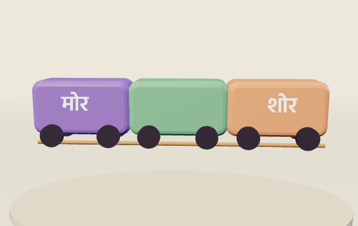
तुक की रेल
तुक मिलने वाले शब्द
Open lesson HIN-03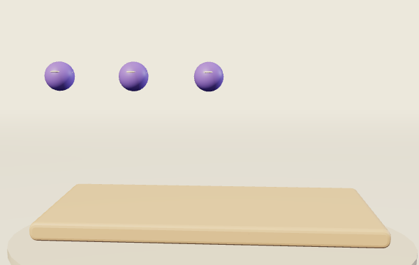
अंकों के तीन रूप
एक से दस तक अंक और संख्या-शब्द
Open lesson HIN-04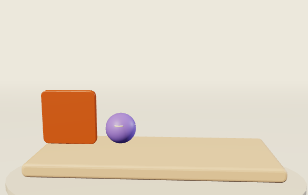
उलटे अर्थ का झूला
विपरीत अर्थ वाले शब्द
Open lesson HIN-05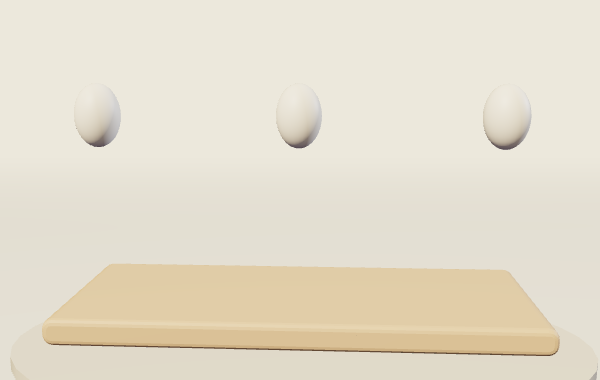
एक से अनेक का बगीचा
एकवचन से बहुवचन
Open lesson HIN-06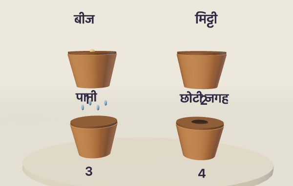
कहानी का क्रम बनाओ
घटनाओं और निर्देशों का सही क्रम
Open lesson HIN-07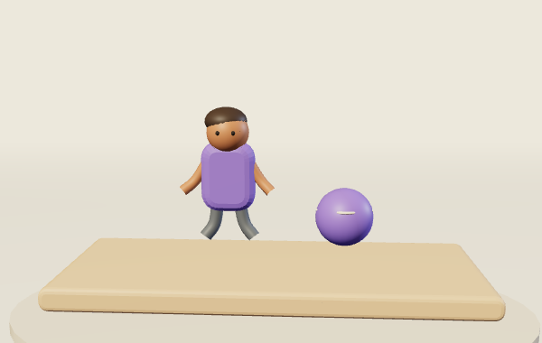
कौन है, क्या करता है?
नाम वाले और काम वाले शब्द
Open lesson HIN-08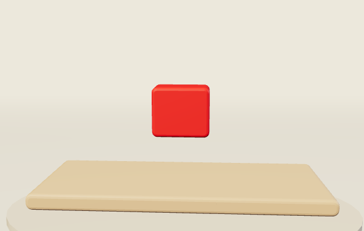
वर्णन वाला डिब्बा
विशेषता बताने वाले शब्द
Open lesson HIN-09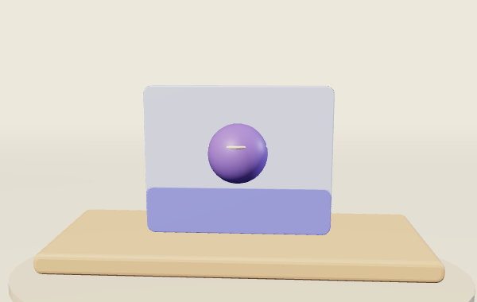
वाक्य की छोटी कड़ियाँ
छूटे छोटे शब्द जोड़कर वाक्य सुधारना
Open lesson HIN-10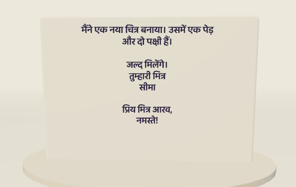
मेरा पत्रघर
मित्र को छोटा पत्र लिखना
Open lesson HIN-11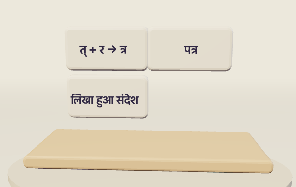
संयुक्त अक्षर कार्यशाला
त्र और श्र से शब्द बनाना
Open lesson HIN-12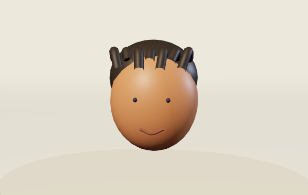
मात्रा का जादू
मात्रा हटने से शब्द और अर्थ बदलना
Open lesson HIN-13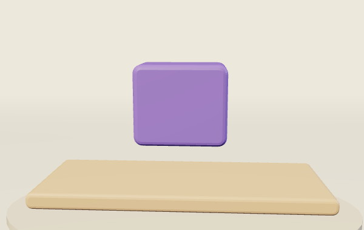
शब्दों का पिटारा
बिखरे अक्षरों से सही शब्द
Open lesson HIN-14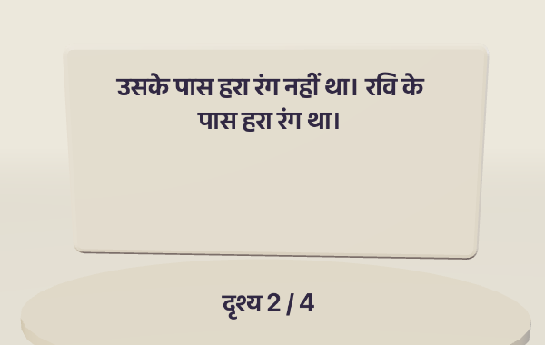
कारण खोजो कहानी में
कहानी में कारण समझना
Open lesson HIN-15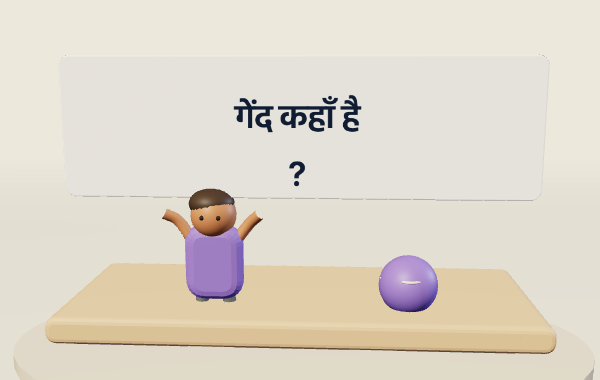
विराम चिह्न की चौकी
पूर्ण विराम और प्रश्न चिह्न
Open lesson HIN-16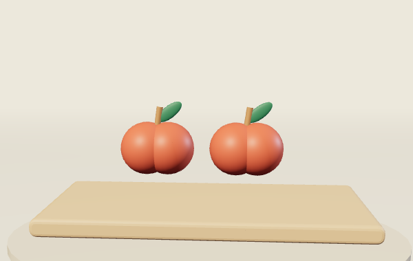
एक शब्द, दो दृश्य
एक शब्द के अलग संदर्भों में अर्थ
Open lesson HIN-17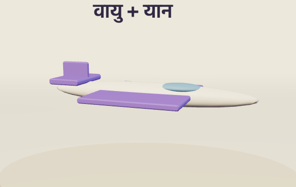
शब्दों की यात्रा
यान जोड़कर नए शब्द बनाना
Open lesson HIN-18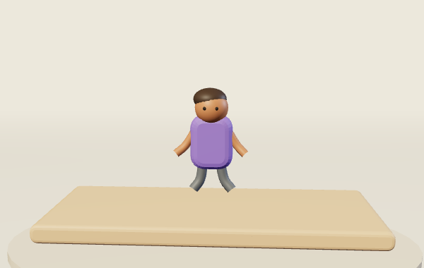
चंद्रबिंदु खोजी
चंद्रबिंदु वाले शब्द पहचानना
Open lesson HIN-19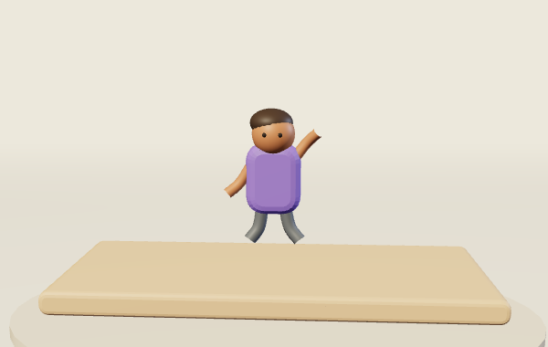
शब्द और वाक्य का मेल
स्त्रीलिंग-पुल्लिंग के अनुसार वाक्य का मेल
Open lesson HIN-20